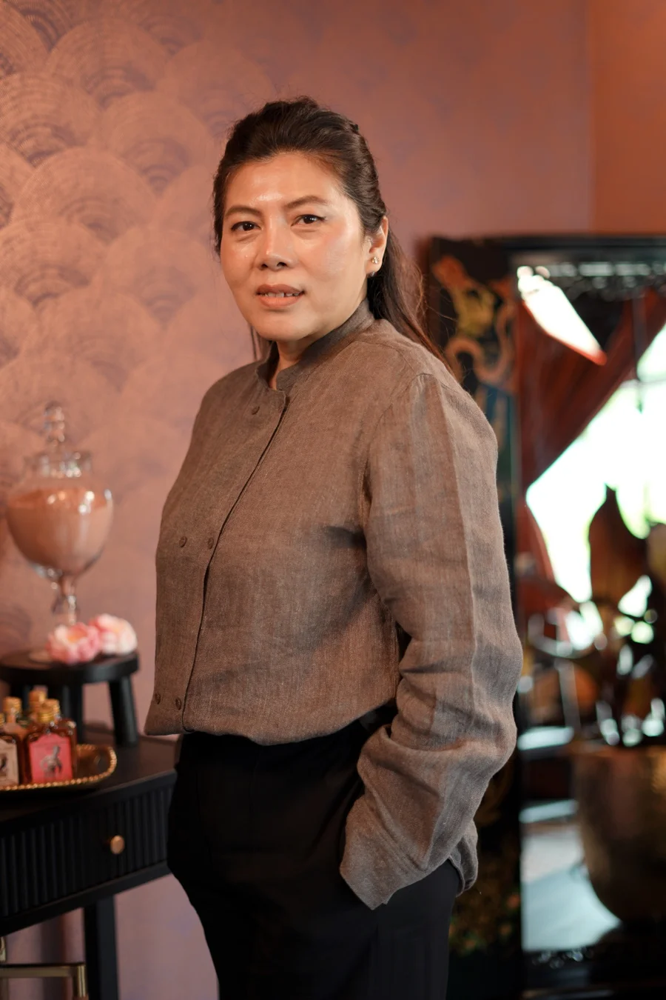

Head master therapist
Pi Gai
A calm, precise approach attentive to tension and each guest’s pace.
Book with Pi Gai →
BAAN D’OR · MONTRÉAL
Meet the people behind our Thai wellness rituals in Montreal. Choose your therapist and book directly.
Meet our therapists ↓THE HANDS BEHIND OUR RITUALS
Head master therapist
A calm, precise approach attentive to tension and each guest’s pace.
Book with Pi Gai →

Check availability and choose your therapist on Fresha.
Book a treatment →